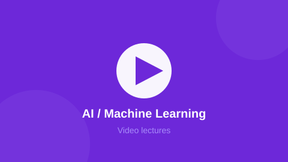

AI / Machine Learning
Learn Python for data, the maths behind models, and train real ML models with scikit-learn.
Course Information
| Level | Intermediate |
|---|---|
| Duration | 14 weeks |
| Credits | 4 |
| Pre-requisite | Basic Python and Class 12 level mathematics. |
| Material | Open source — every module links to its original tutorial |
About This Track
This track explains machine learning the way it is actually used: load a dataset, clean it, pick a model, measure the error, and improve it. Theory is introduced only when it is needed to understand the next step.
The written notes follow the GeeksforGeeks machine learning series and the Google Machine Learning Crash Course. Python syntax revision comes from W3Schools, datasets and hands-on notebooks come from Kaggle Learn, and every model we use is documented in the open source scikit-learn manual.
What You Will Learn
- Handle data with NumPy arrays and Pandas dataframes
- Clean missing values, encode categories and scale features
- Explain the maths of linear regression, gradient descent and cost functions
- Train and compare regression, classification and clustering models
- Judge a model honestly using train/test split, cross validation and confusion matrix
- Build a small neural network and understand forward and back propagation
Syllabus
| # | Module | Topics Covered | Weeks | Study Material |
|---|---|---|---|---|
| 1 | Python for Data Science | Lists, dicts, comprehensions, functions, files, virtual environments | 2 | W3Schools Python |
| 2 | Maths for ML | Vectors, matrices, dot product, derivatives, probability, mean/variance | 2 | GfG Maths for ML |
| 3 | NumPy, Pandas & Plots | Arrays, broadcasting, dataframes, groupby, merge, matplotlib | 2 | Kaggle Learn Pandas |
| 4 | Supervised Learning | Linear & logistic regression, KNN, decision trees, random forest, SVM | 3 | scikit-learn tutorial |
| 5 | Unsupervised Learning | K-means, hierarchical clustering, PCA, anomaly detection | 2 | Google ML Crash Course |
| 6 | Neural Networks & NLP | Perceptron, activation functions, back propagation, CNN idea, text basics | 3 | GfG Deep Learning |
Code From The Lab
Sample from Module 4 — your first classifier in scikit-learn
from sklearn.datasets import load_iris
from sklearn.model_selection import train_test_split
from sklearn.tree import DecisionTreeClassifier
from sklearn.metrics import accuracy_score
X, y = load_iris(return_X_y=True)
X_train, X_test, y_train, y_test = train_test_split(
X, y, test_size=0.2, random_state=42)
model = DecisionTreeClassifier(max_depth=3)
model.fit(X_train, y_train)
pred = model.predict(X_test)
print("Accuracy:", accuracy_score(y_test, pred))Video Lectures
Click the thumbnail to open the video playlist for this track:

Recorded College Session
Video Playlists
- Krish Naik — Complete machine learning and data science playlists
- StatQuest with Josh Starmer — The clearest explanation of the maths behind each model
- freeCodeCamp.org — Full length Python, ML and deep learning courses
Open Source Study Material
These are the exact open sources the notes for this track are prepared from.
| Source | Best Used For | Link |
|---|---|---|
| GeeksforGeeks | Machine learning tutorial, algorithm by algorithm with code | Open |
| W3Schools | Python and its statistics / ML basics section with a Try-it editor | Open |
| Kaggle Learn | Micro courses plus thousands of real datasets to practise on | Open |
| Google ML Crash Course | Google's open course with exercises and visualisations | Open |
| scikit-learn docs | Open source user guide for every model used in this track | Open |
| Stack Overflow | Debug shape errors and library issues in the machine-learning tag | Open |
Lab Projects
- House price prediction using linear regression
- Handwritten digit recognition on the MNIST dataset
- Student performance analysis on your own college data
- Spam vs not-spam message classifier with a simple NLP pipeline
Your Progress
Modules finished in this track:
0 of 6
Self rated confidence: